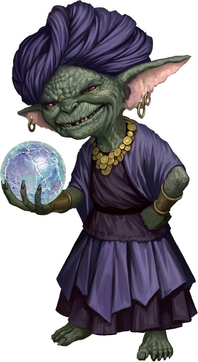

Sursaut de magie sauvage
Cette aide de jeu s'adresse aux ensorceleurs utilisant la magie sauvage. Elle propose deux modifications des règles sur le déclenchement des sursauts, des précisions techniques sur les effets de sorts, et surtout deux nouvelles tables d'effets entropiques. L'objectif principal de cette aide est d'aboutir à une classe qui peut se jouer sans négocier avec le MD, et qui propose des effets à la fois jouables ET intéressants.
Options pour le déclenchement des sursauts
Les deux options qui suivent ont pour objectif d'encadrer les règles de déclenchement des sursauts sans laisser la main au MD. Elles équilibrent l'usage de cette capacité en assurant des déclenchements réguliers mais sans abus possible aux joueurs incarnant l'ensorceleur. Une précision a également été apportée sur le niveau effectif auquel les sorts de magie sauvage étaient lancés.
Voici donc comment nous conseillons de lire le paragraphe concernant les sursauts :
Sursaut de magie sauvage (systématique)
PRÉCISIONS
Un Sursaut ne peut se produire qu'une seule fois par tour. Si l'effet de la magie sauvage est un sort, celui-ci est trop violent pour être affecté par la métamagie. S'il demande normalement de la concentration, dans ce cas il n'en demande pas ; le sort persiste pour sa durée totale. Le sort est lancé à un niveau égal au niveau du sort déclencheur, ou à son niveau minimal, s'il est plus élevé.
Dès lors que vous choisissez cette origine au niveau 1, vos sorts peuvent déclencher des poussées de magie incontrôlables. Tout de suite après avoir lancé un sort d'ensorceleur du niveau 1 ou plus, lancez un d20. Si vous obtenez un 1, vous déclenchez un effet magique aléatoire. Reportez-vous au tableau de Sursauts de magie sauvage pour déterminer les effets du résultat.
Vague de chaos (risques décuplées)
À partir du niveau 1, vous pouvez manipuler les forces du hasard et du chaos pour gagner un avantage sur un jet d'attaque, un jet de caractéristique ou un jet de sauvegarde. Lorsque vous le faites, vous devez terminer un repos long avant de pouvoir l'utiliser à nouveau. Quand vous utilisez cette capacité, vos chances de déclencher un effet magique aléatoire sont décuplées : vos chances de produire un sursaut passent de 1 à 10 sur le dé 20. Les chances repassent à 1 sur le d20 après que vous ayez déclenché un effet de magie sauvage, suite à quoi vous récupérez votre vague de chaos.
Précisions techniques sur les effets de sort
Afin de répondre aux questions qui se posent régulièrement sur le fonctionnement de la magie sauvage, voici quelques précisions quant à l'interprétation à donner aux tables d'effet :
Cibles
Si un effet désigne une cible du sort déclencheur alors qu'il en existe plusieurs, l'une des cibles est tirée au hasard. Si un effet désigne une cible du sort déclencheur alors qu'il n'en existe pas, on considère la cible la plus proche du centre de la zone d'effet, en départageant si nécessaire au dé plusieurs cibles également distantes. Si aucune cible ne se trouve dans la zone du sort déclencheur, l'ensorceleur devient la cible de l'effet.
Permanence des effets
Sauf si cela est précisé dans leur descriptif, les effets de magie sauvage qui ne font pas directement référence à un sort ne peuvent être dissipés ni annulés par une délivrance des malédictions. Un champ antimagie en annule localement les effets comme il le ferait avec n'importe quel type de magie.
Jets de sauvegarde
Quand un effet particulier autre qu'un sort et produit par la magie sauvage demande d'effectuer un jet de sauvegarde, le DD est fixé à 10 + le niveau du sort.
Tables de sursaut de magie sauvage
Les tables proposées ci-dessous sont prévues pour remplacer la table du Manuel des Joueurs. Il s'agit d'une table classique, avec 90 entrées différentes, suivie d'une table réservée au MD, sur laquelle le MD tire secrètement si le joueur obtient un résultat compris entre 21 et 30 sur le d100. Le niveau des sorts n'est jamais indiqué puisque celui-ci est prévu pour être égal à celui du sort lancé (ou au niveau minimum possible pour lancer le sort). L'équilibre entre les effets négatifs, neutres et positifs a été fait en respectant celui de la table originale du Manuel des Joueurs (20%, 40%, 40%).
Table générale
C'est sur cette table que le joueur lance le d100 pour déterminer l'effet aléatoire que sa magie sauvage a provoqué.
| d100 | Effet |
| 1 | Votre magie a attiré un démon. Un cercle d'invocation de 3x3 mètres apparaît dans l'espace libre le plus proche de vous. Le cercle ne peut être endommagé mais il peut être dissipé comme un sort de niveau 6. Le MD lance secrètement deux d6. Le premier résultat détermine le nombre de rounds qui précèdent l'émergence du démon. Le second résultat détermine le type du démon invoqué. Le démon apparaît toujours estropié et ne possède que 5% de ses points de vie par niveau de sort. Cela n'affecte pas ses autres capacités. S'il peut vous localiser, le démon s'attaque à vous de préférence. Sinon il s'en prend à la créature intelligente la plus proche. Il disparaît après avoir massacré une créature intelligente. |
| 2 | Jusqu'à la fin de votre prochain tour, vous échangez votre place avec un goristro arraché aux Abysses. Le démon et vous-même êtes immunisés à tous les types de dégâts pendant cet échange. L'initiative du démon est inférieure de 1 point à la vôtre et son nombre d'attaques est limité à un, plus un tous les 4 niveaux de sort. Le MD peut décider ce qui vous arrive tandis que vous effectuez votre bref séjour sur l'un des 666 plans des abysses, ou considérer que vous en avez perdu tout souvenir à votre retour. |
| 3 | Vous lancez boule de feu à retardement centrée sur vous, avec des dégâts de base de 1d6 par niveau de sort et une durée fixée secrètement par le MD à 1d10 rounds. |
| 4 | Toutes les pièces dans un rayon de 9 mètres autour de vous changent de nature. Déterminez le cycle suivi en lançant un d20. [1-10] cuivre -> argent -> or -> cuivre ; [11-20] or -> argent -> cuivre -> or. |
| 5 | S'il s'agit d'un sort à concentration, vous ne pouvez pas rompre volontairement la concentration ni lancer un autre sort à concentration pendant qu'il fait effet. Sinon, votre sort échoue et n'a aucun effet mais vous pouvez le relancer au début de votre prochain tour. |
| 6 | Tous les moyens de fermeture non magique (serrures, cadenas, loquets, boucles de ceinture, lacets, sangles, etc.) dans un rayon de 18 mètres autour de vous se débloquent. |
| 7 | Vous lancez sommeil centré sur vous avec un rayon de 18 mètres. |
| 8 | Tous les autres sorts de niveaux inférieurs ou égaux dans un rayon de 9 mètres autour de vous sont dissipés. Si aucun sort ne peut être ainsi dissipé, votre sort échoue et n'a aucun effet. |
| 9 | Pendant une minute, tous les dégâts subis par d'autres créatures dans un rayon de 9 mètres autour de vous sont partagés équitablement avec vous. Si vous subissez directement des dégâts, ceux-ci sont partagés équitablement avec une cible au hasard dans un rayon de 9 mètres autour de vous. Si aucun ennemi visible ne se trouve dans un rayon de 36 mètres autour de vous, cet effet ne s'applique pas et votre sort échoue et n'a aucun effet. |
| 10 | Vous lancez boule de feu, centré sur vous, avec des dégâts égaux à 2d6 par niveau de sort. |
| 11 | Une couche de glace de 20 cm par niveau de sort recouvre toute la zone dans un rayon de 9 mètres autour de vous. Les créatures dans la zone sont entravées jusqu'à ce que la zone qui les retient subisse un total de 3 dégâts par niveau de sort. Une créature prise totalement sous la glace est paralysée et peut retenir sa respiration un nombre de minutes égal à 1 + son modificateur de constitution, après quoi elle bénéficie de 1 round par bonus de constitution avant de suffoquer. Tant que la glace n'a pas été brisée, le terrain est considéré difficile. |
| 12 | Vous vomissez un babélien dont les points de vie sont égaux à 10 fois le niveau de sort. La créature est dirigée par le MD. |
| 13 | Vous lancez tentacules désopilantes de Cécile sur vous. Ne cherchez pas ce sort ailleurs : il n'existe pas en dehors de la magie sauvage. Tous ses effets s'apparentent à ceux des tentacules noirs d'Evard mais le sort ne fait pas de dégâts. A la place, les tentacules harcèlent les créatures de savantes chatouilles. Une créature chatouillée a un désavantage à tous ses jets. |
| 14 | Vous lancez confusion centré sur vous. |
| 15 | Vous lancez pétrification sur vous. Si vous deviez être physiquement brisé tandis que vous êtes pétrifié, l'effet est dissipé et vous reprenez votre état normal, sans souffrir d'aucune difformité. |
| 16 | Pendant 10 minutes, vous pouvez voir dans le noir (y compris les ténèbres magiques) mais la présence de lumière non magique vous oblige à fermer les yeux (si vous vous trouvez dans une zone éclairée ou faiblement éclairée par une lumière non magique, vous êtes considéré comme aveuglé). |
| 17 | Vous perdez 1 dé de vie en réserve par niveau de sort. |
| 18 | Vous êtes aveuglé jusqu'à ce que vous lanciez un autre sort de niveau 1 ou supérieur. |
| 19 | Lancez un d20. [1-10] les vêtements et les armures légères non magiques que vous portez tombent en poussière ; [11-20] les vêtements et les armures légères non magiques que portent les autres créatures dans un rayon de 9 mètres autour de vous tombent en poussière. |
| 20 | Pendant un jour par niveau de sort, vous disposez d'un nouveau bras sous l'un de ceux que vous possédiez déjà. Si vous ne l'attachez pas fermement, il témoigne de tendances cleptomanes incontrôlables, mais vous permet de bénéficier d'un avantage à vos jets d'escamotage ainsi que d'une seconde interaction objet à chacun de vos tours. |
| 21-30 | Les effets de la magie sauvage sont parfois si imprévisibles qu'ils vous échappent. Le MD tire sur la table qui lui est réservée. |
| 31 | Vous ouvrez une brèche vers un autre plan à 3 mètres de hauteur, 1,50 mètre devant vous. La brèche a une épaisseur nulle, une longueur de 1,50 mètre et une largeur maximale de 50 centimètres en son centre. Elle ne peut être franchie de votre côté et se referme après une minute par niveau de sort. De l'eau de mer en jaillit à raison de 1 cube de 1,50 mètre de côté par round. Une créature sous la brèche doit faire un jet de sauvegarde de force ou subir 1d10 dégâts contondants par niveau de sort. Les dégâts sont réduits de moitié en cas de réussite. |
| 32 | Pendant une heure par niveau de sort, les objets inflammables qui ne sont pas portés ou tenus par une créature s'enflamment quand vous les saisissez (que vos mains soient ou non protégées). |
| 33 | Vous lancez projectile magique avec le double de missiles. Vous dirigez la moitié des missiles sur vous. |
| 34 | Vous lancez métal brûlant sur les trois objets métalliques les plus gros dans un rayon de 9 mètres autour de vous. |
| 35 | A mi-chemin entre vous et votre cible, une explosion de force invisible se produit. Dans un rayon de 3 mètres, tous les objets de taille P et toutes les créatures sont repoussés de 3 mètres. |
| 36 | Vous êtes transporté dans le Plan Astral jusqu'à la fin de votre prochain tour, après quoi vous retournez à votre position d'origine ou dans l'espace inoccupé le plus proche. |
| 37 | Tout le bois non magique dans un rayon de 18 mètres autour de vous verdit. Lancez un d20. [1-10] le bois gonfle, se craquelle et finit rongé par les champignons ; [11-20] le bois se couvre de fleurs magnifiques. |
| 38 | Vous lancez inversion de la gravité centré sur vous, mais sans effet sur les créatures. |
| 39 | Pendant une heure par niveau de sort, vous émettez une lumière faible sur 12 mètres. |
| 40 | Pendant une minute, à la fin de chacun de vos tours vous regagnez 1d20-10 points de vie. Si le résultat est négatif, vous perdez autant de points de vie. |
| 41 | Vous lancez globe d'invulnérabilité sur la cible. |
| 42 | Votre Sagesse est définitivement modifiée de 1d4-2. |
| 43 | L'intelligence, la sagesse et le charisme des cibles est réduite de 2d6 (minimum 1) jusqu'à la fin de votre prochain tour. |
| 44 | Pendant une minute par niveau de sort, vous gagnez la résistance à un type de dégât de votre choix et la vulnérabilité à tous les autres types. |
| 45 | Vous lancez peau de pierre sur toutes les créatures dans un rayon de 18 mètres autour de vous. Tant qu'elles en bénéficient, la peau des créatures prend l'apparence minérale de votre choix. |
| 46 | Vous lancez globe d'invulnérabilité sur la cible, avec un effet inverse de celui décrit dans le sort. |
| 47 | Vous lancez nappe de brouillard centré sur vous. |
| 48 | Vous lancez déguisement sur toutes les créatures dans un rayon de 9 mètres autour de vous. Chaque créature ainsi déguisée prend l'apparence de la vision idéalisée qu'elle a consciemment ou non d'elle-même. |
| 49 | Un quasit apparaît, dévore votre familier si vous en aviez un, grimpe sur votre dos, profère des injures puis se rend invisible. Il ne fait plus rien sinon se défendre jusqu'à ce que vous lui donniez un ordre qu'il accepte d'exécuter. L'ordre doit contribuer à semer désordre, confusion ou destruction. Il disparaît après l'avoir accompli. |
| 50 | Des décharges d'énergie touchent toutes les créatures dans un rayon de 18 mètres autour de vous, leur infligeant 1d10 dégâts de foudre, plus 1d10 tous les 3 niveaux de sort. Les créatures qui ne sont pas au contact du sol ne sont pas affectées. |
| 51 | Vous perdez 1d6 points de vie par niveau de sort. Chaque fois que le sort inflige des dégâts, il en inflige 1d6 de plus par niveau de sort. |
| 52 | Toutes les créatures dans un rayon de 9 mètres autour de vous subissent 1d10 dégâts nécrotiques. Vous regagnez autant de points de vie que la somme des dégâts ainsi infligés. |
| 53 | Vous lancez minuscules météores de Melf. Le MD tire secrètement un d6. S'il obtient 1, le sort est hostile et chaque météore que vous cherchez à employer se retournera contre vous ou vos alliés. S'il obtient 2 ou 3, il s'agit d'une illusion parfaite. |
| 54 | Toutes les créatures ciblées s'enflamment. Elles subissent 1d6 dégâts de feu au début de chacun de leurs tours jusqu'à ce qu'une action soit consacrée à étouffer les flammes. |
| 55 | Toutes les créatures ciblées se couvrent d'une fine couche de givre. Elles subissent 1d6 dégâts de froid et leur vitesse de déplacement est réduite de 3 mètres jusqu'au début de votre prochain tour. |
| 56 | La pierre non magique de plus grande valeur dans un rayon de 18 mètres autour de vous (ou à défaut la gemme la plus proche au-delà) est altérée. Lancez un d20. [1-10] elle est réduite en poussière ; [11-20] sa valeur est doublée. |
| 57 | Un pièce d'or apparaît dans votre bouche. À votre prochain tour, vous utilisez votre action pour régurgiter 1d100 pièces d'or. |
| 58 | Vous créez une bulle temporelle qui dure une minute, suit vos mouvements et altère le passage du temps pour les créatures qui débutent leur tour dans un rayon de 9 mètres autour de vous. Lancez un d20 pour déterminer l'effet. [1-10] les créatures subissent les effets d'un sort de lenteur ; [11-20] les créatures bénéficient des effets d'un sort de hâte. |
| 59 | Pendant un jour par niveau de sort, vous allumez ou éteignez automatiquement toutes les sources de feu non magique quand vous vous en approchez à 1,50 mètre ou moins. |
| 60 | Pendant un jour par niveau de sort vos paupières représentent des yeux peints animés par la magie sauvage. Tant que vous avez les yeux ouverts, vous avez un désavantage à vos jets de Sagesse (Perception). Quand vous gardez les yeux fermés, vous pouvez activer librement la magie des yeux peints pour voir normalement, percevoir les objets et les créatures invisibles ou sur le plan éthéré, et bénéficier d'un avantage à vos jets de Sagesse (Perception) pendant 2 rounds. Vous pouvez activer cette magie pour un total de 6 rounds entre chaque repos long. |
| 61 | Si le sort devait consommer une composante matérielle, il ne le consomme pas. Sinon, vous regagnez votre emplacement de sort dépensé le plus faible. |
| 62 | S'il s'agit d'un sort à concentration, il ne requiert pas de concentration et sa durée devient égale à sa durée maximale. Vous pouvez toujours l'interrompre prématurément. Sinon, vous pouvez le relancer au début de votre prochain tour. |
| 63 | Si le sort inflige à une créature des dégâts de feu, de froid ou de foudre, elle subit jusqu'à la fin de votre prochain tour la condition effrayée, entravée ou aveuglée, selon l'élément. Sinon, vous regagnez votre emplacement de sort dépensé le plus faible. |
| 64 | Si vous avez utilisé une métamagie à ce tour, les autres usages que vous ferez de cette métamagie avant votre prochain repos long ne vous coûtent aucun point de sorcellerie. Sinon, vous regagnez votre emplacement de sort dépensé le plus faible. |
| 65 | Vous lancez projectile magique. |
| 66 | Vous lancez lame de feu. |
| 67 | Vous lancez vague tonnante. |
| 68 | Vous lancez éclair. |
| 69 | Vous lancez lévitation sur une créature visible de votre choix à 9 mètres ou moins de vous. |
| 70 | Vous lancez flou sur une créature visible de votre choix à 9 mètres ou moins de vous. |
| 71 | Vous lancez clignotement sur une créature visible de votre choix à 9 mètres ou moins de vous. |
| 72 | Vous lancez image miroir sur une créature visible de votre choix à 9 mètres ou moins de vous. |
| 73 | Vous lancez peau d'écorce sur une créature visible de votre choix à 9 mètres ou moins de vous. |
| 74 | Vous lancez flammes. Si vous attaquez et touchez une créature avec cette flamme, doublez les dégâts. |
| 75 | Vous lancez armure de mage sur vous. La classe d'armure prodiguée par cette armure est augmentée de 1 point, plus 1 point tous les 3 niveaux de sort. |
| 76 | Vous lancez tentacules noirs d'Evard centrés sur la cible. Si le niveau de sort est inférieur ou égal à 3, les tentacules apparaissent éthérés et ne peuvent entraver les créatures. |
| 77 | Vous lancez minuscules météores de Melf, avec un nombre de météores égal au niveau de sort. |
| 78 | Vous lancez arme magique avec une durée de un jour par niveau de sort sur une lame non magique aléatoire dans un rayon de 9 mètres autour de vous. Quand le sort prend fin, l'arme garde de manière permanente une aura lumineuse. Si l'effet a duré 3 jours ou plus sans être dissipé, l'aura éclaire comme une torche et l'arme garde un bonus de +1 aux jets d'attaque et aux dégâts. |
| 79 | Vous lancez arrêt du temps, mais pour une durée d'un seul tour. A la fin de ce tour, faites un jet de sauvegarde d'intelligence. En cas d'échec, vous êtes incapable d'agir (pas d'action ni de réaction possible) au tour suivant. |
| 80 | Vous devenez invisible pendant une minute. Pendant ce temps, les autres créatures ne peuvent pas vous entendre. L'invisibilité prend fin lorsque vous attaquez ou lancez un sort. |
| 81 | Le prochain sort capable de faire des dégâts que vous lancez avant votre prochain repos long fait le maximum de dégâts. |
| 82 | Un bouclier spectral vous entoure pendant une minute, vous faisant bénéficier d'un bonus de +2 à la CA et de l'immunité au sort projectile magique. |
| 83 | Un œil apparaît sur votre front pendant une minute. Pendant cette durée, vous avez un avantage à vos jets de Sagesse (Perception) qui se basent sur la vue. |
| 84 | Vous obtenez 1 action supplémentaire à utiliser immédiatement. |
| 85 | A chaque tour pendant une minute, vous pouvez utiliser votre action bonus pour vous téléporter sur une distance de 6 mètres ou moins. |
| 86 | Vous vous téléportez dans un espace inoccupé que vous pouvez voir dans un rayon de 18 mètres autour de vous. |
| 87 | Jusqu'à la fin de votre prochain tour vous pouvez vous déplacer librement à travers les objets, les créatures et les murs. Si l'effet cesse alors que vous êtes dans un obstacle, vous en êtes violemment expulsé et subissez 4d6 dégâts de force. |
| 88 | Pendant une minute, vous regagnez 5 points de vie au début de chacun de vos tours. |
| 89 | Vous regagnez 1d6 points de vie par point de sorcellerie déjà dépensé (minimum 1 dé). |
| 90 | L'animal non hostile de taille P le plus proche de vous acquiert une anomalie physique visible de votre choix (sans effet) et devient votre familier de manière permanente, comme si vous l'aviez invoqué avec appel de Familier. Si vous le renvoyez dans une poche dimensionnelle, il disparaît à jamais. Si vous aviez déjà un familier, celui le remplace. |
| 91 | De une à trois créatures de votre choix dans un rayon de 9 mètres autour de vous subissent chacune 4d10 dégâts de foudre. |
| 92 | Vous effrayez de une à trois créatures de votre choix dans un rayon de 9 mètres autour de vous jusqu'au début de votre prochain tour. |
| 93 | Pendant une heure par niveau de sort, vous avez accès à toutes les formes de métamagie. |
| 94 | Vous regagnez tous vos points de sorcellerie. Si vous n'en aviez dépensé aucun, vous regagnez votre emplacement de sort le plus faible. |
| 95 | Choisissez une métamagie : jusqu'à votre prochain repos long, vous pouvez l'utiliser et elle coûte 1 point de sorcellerie de moins. |
| 96 | Toutes les métamagies coûtent 1 point de sorcellerie de moins jusqu'à votre prochain repos long. |
| 97 | Pendant un jour par niveau de sort votre ombre devient celle d'un illithid avec le même équipement que vous. Les mouvements des tentacules et la forme du crâne peuvent révéler cette anomalie aux observateurs attentifs. Une fois entre chaque repos long, vous pouvez utiliser une action pour réaliser une décharge mentale. Chaque créature dans un cône de 18 mètres doit alors réussir un jet de sauvegarde d'intelligence DD 15 ou subir 4d8+4 dégâts psychiques et être étourdie pendant une minute. Les créatures affectées peuvent lancer une nouvelle sauvegarde à l'issue de chacun de leur tour pour mettre fin à cette condition. |
| 98 | Pendant un jour par niveau de sort, vos mains et avant-bras se couvrent d'un pigment vivant de couleur bleu et vos ongles s'allongent et prennent une teinte jaune vif. Une fois entre chaque repos long, vous pouvez lancer modification de mémoire avec une portée de Contact. |
| 99 | Pendant un jour par niveau de sort, votre vitesse de déplacement augmente de 1,50 mètre et vous vous déplacez en flottant à 1 cm du niveau du sol. Vous n'exercez par conséquent aucune pression là où vous mettez les pieds. Ceci ne vous permet pas de marcher sur des surfaces impraticables, d'ignorer les terrains difficiles liés à un relief accidenté ou d'annuler le bruit de vos pas, mais bien de marcher effectivement 1 cm plus haut que l'endroit où vous devriez normalement poser le pied. Vous pouvez ainsi éviter de laisser des empreintes ou de vous enfoncer dans un sol meuble, et vous ne glissez jamais sur un sol gelé, ni ne déclenchez les dalles à pression. |
| 100 | Pendant une seconde, vous ne faites qu'un avec l'énergie entropique. Toutes les créatures à 1,50 mètre de vous sont repoussées de 3 mètres, et vous bénéficiez immédiatement des effets d'un repos long. |
Table réservée du MD
C'est sur cette table que le MD tire secrètement quand le joueur obtient un résultat compris entre 21 et 30 sur la table générale.
| d20 | Effet |
| 1 | La prochaine fois que l'ensorceleur assiste à la mort d'une créature humanoïde non hostile, il a l'intuition qu'il pourrait la sauver. S'il place ses mains sur la créature et y consacre une action dans la minute qui suit, la créature bénéficie des effets d'un sort de résurrection. |
| 2 | La prochaine fois que l'ensorceleur ou un de ses alliés enregistre son deuxième échec contre la mort, l'ensemble du groupe est téléporté à l'endroit où l'ensorceleur a déclenché cet effet initialement, à condition qu'il soit sans danger et puisse accueillir le groupe. Sinon, le groupe est téléporté au portail permanent le plus proche. |
| 3 | Pendant 3d3 jours, toute arme non magique qui touche l'ensorceleur se désagrège lentement. Après avoir infligé les dégâts, l'arme subit chaque round une pénalité permanente et cumulative de -1 aux jets de dégâts. Si la pénalité arrive à -5, l'arme est détruite. Les munitions non magiques qui touchent l'ensorceleur sont détruites après avoir infligé leurs dégâts. |
| 4 | Les prochains dégâts de sort que l'ensorceleur devrait infliger sont triplés. Si une créature meurt de cette manière, son corps se transforme en statue de glace qui explose dès qu'elle entre en contact avec quoi que ce soit (y compris son propre équipement). |
| 5 | La prochaine fois que l'ensorceleur réalise un jet de caractéristique sociale dans les trois prochains jours, un parfum entêtant émane de lui, et lui donne un avantage à ce jet. Le parfum persiste et entoure l'ensorceleur tout le jour durant, enchantant ceux qui le respirent. Jusqu'au prochain repos long, l'ensorceleur a un avantage à ses jets sociaux. |
| 6 | La prochaine fois que l'ensorceleur lance un dé de vie, il récupère tous ses points de vie. |
| 7 | La prochaine fois que l'ensorceleur utilise sa métamagie, il regagne 1d6 points de sorcellerie. |
| 8 | La prochaine fois que l'ensorceleur inflige un coup critique, il relance 3 fois les dés de dégâts au lieu de ne le faire qu'une fois. Un critique comme ça n'arrive pas souvent : prenez le temps de décrire un effet impressionnant. |
| 9 | Un fragment de la pierre de Frai est implanté dans le corps de l'ensorceleur. La présence de cette pierre ne peut être détectée mais un sort de restauration supérieure lancé sur l'ensorceleur la détruit. La prochaine fois que l'ensorceleur réussit un jet de sauvegarde contre la mort, il recrache la pierre. Quiconque possède cette pierre peut lancer le sort suggestion sur l'ensorceleur, avec un DD 20, à raison d'une fois par jour. La pierre peut être vendue pour 1d10 x 200 pièces d'or. |
| 10 | La prochaine fois que quelqu'un d'autre que l'ensorceleur lance un sort ciblant une unique créature à 9 mètres ou moins de lui, l'ensorceleur devient la cible du sort s'il ne l'était pas déjà, ou le lanceur de sort devient la cible du sort si l'ensorceleur en était déjà la cible. La portée du sort peut éventuellement être étendue pour permettre cet échange de cible. |
| 11 | Les propriétés d'un liquide de votre choix à 18 mètres de l'ensorceleur sont définitivement altérées, remplaçant toute autre propriété magique préexistante. Vous déterminez la nouvelle propriété parmi les potions du DMG, au hasard ou selon votre inspiration. Le liquide garde la même apparence qu'avant d'être affecté par la magie sauvage. |
| 12 | La magie chaotique de l'ensorceleur a attiré l'attention d'un dragon d'airain (50%) ou rouge (50%) de FP inférieur ou égal au niveau de l'ensorceleur (prenez le niveau maximum possible). Vous êtes libre de déterminer les intentions du dragon à l'égard du groupe, en respectant son alignement (chaotique bon ou mauvais). |
| 13 | Les sorts de l'ensorceleur génèrent des explosions de force jusqu'à son prochain repos long. Chaque créature qui subit plus de 5 dégâts non psychiques d'un sort de l'ensorceleur génère une explosion qui inflige 1d6 dégâts de force à toutes les autres créatures à 3 mètres. |
| 14 | Un autre lanceur de sort à 18 mètres de l'ensorceleur, ou au-delà s'il n'y en a pas, est frappé à son insu par la magie entropique. La prochaine fois que ce lanceur de sort lancera un sort de niveau 1 ou supérieur, il devra effectuer un jet sur la table de sursaut de magie sauvage. |
| 15 | Un objet aléatoire auquel l'ensorceleur est lié acquiert de manière permanente une propriété bénéfique mineure et une propriété négative mineure. Si cet objet est de nouveau affecté par la magie sauvage, ces propriétés sont remplacées par un nouveau tirage. Si l'ensorceleur n'est lié à aucun objet, son focaliseur acquiert ces propriétés et exige désormais un lien, puis se lie automatiquement à lui. Se référer à la table des artefacts du DMG. |
| 16 | La magie de l'ensorceleur a (inévitablement) attiré l'attention d'un quarut, un puissant artificiel du Nirvana des Rouages de Mechanus. Chargée de mettre un terme à cet usage chaotique de la magie, la créature se matérialise à proximité de l'ensorceleur sous 1d6 heures, et menace le groupe au nom de l'Ordre Universel avant de se disloquer sous l'effet d'un hiatus dans sa propre magie de téléportation. Lancez un d20. [1-7] la dislocation ne provoque pas d'explosion. [8-20] le quarut explose et toutes les créatures dans une sphère de 6 mètres de rayon autour de lui doivent réussir un jet de sauvegarde de Dextérité sans quoi chacune d'elles subit 2d4 dégâts contondants par niveau de sort. Chaque 4 obtenu sur les premiers dés de dégât permet de lancer un dé additionnel. En cas de réussite sur le jet de sauvegarde, les dégâts sont réduits de moitié. Les métaux, pièces et engrenages abandonnés peuvent être monnayés auprès d'un forgeron pour 1d100 po par niveau de sort. |
| 17 | Les prochains dégâts de sort que l'ensorceleur devrait infliger sont annulés. Les créatures non artificielles sont soignées du même montant. L'ensorceleur a conscience de cet effet après qu'il se soit produit. |
| 18 | Le plus gros objet non magique de taille M ou supérieure à proximité de la cible est transformé en mimic. S'il contenait des objets, ceux-ci seront régurgités par la créature à sa mort. |
| 19 | Les ombres de toutes les créatures à 9 mètres autour de l'ensorceleur abritent désormais des ombres. Celles-ci attendent le moment que vous jugerez opportun pour attaquer. Cette attaque a toujours lieu en même temps, quelle que soit la distance qui les sépare. Les ombres sont indétectables tant qu'aucune d'elles ne s'est manifestée, et peuvent survivre 3d3 jours, ou jusqu'à la mort de celui qui les abrite. |
| 20 | Lancez 1d8. La prochaine fois que l'ensorceleur lance un sort de niveau inférieur ou égal, il échoue et n'a aucun effet. |
Options et tables écrites par Johan et Arnaud